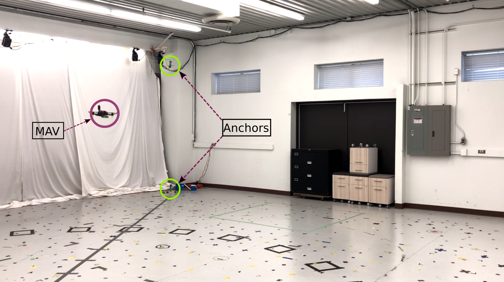
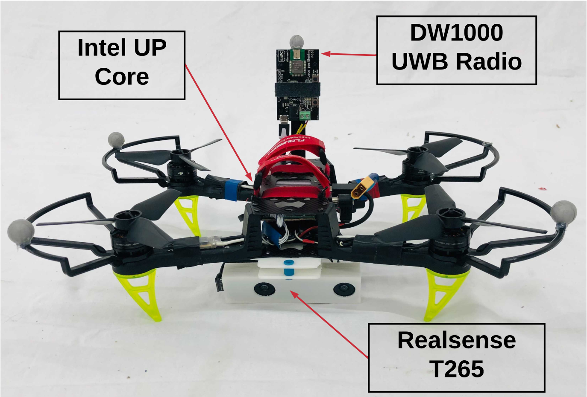

UTIAS_vicon_02022022
Description
The dataset was collected at the UTIAS vicon testbed equipped with 8 UWB anchors at the corners of a flight arena of dimensions 7 m × 8 m × 3.5 m. The arena is equipped with a Vicon motion capture system for ground truth. A picture of the tested with the anchors and MAV highlighed is shown below.

The test platform is a custom built 220mm size quadrotor with a single UWB tag, an Intel Realsense T265 tracking camera, and an Intel UP board computer. For each trial, the MAV was flown manually along arbitrary trajectories. All the sensor data was recorded on the onboard computer in each case.

This dataset has been used in (Goudar et al., 2022), (Dümbgen et al., 2023) which serve as references for evaluation.
Experiments
A video of one of the manual flights is shown below.

Data files
The individual datafiles can be downloaded from the links provided below.
| Name | Link | Size | Comments |
|---|---|---|---|
| Config file | |||
| Trial1 | |||
| Trial2 | |||
| Trial3 | |||
| Trial4 | |||
| Trial5 | |||
| Trial6 | |||
| Trial7 | |||
| Trial8 | |||
| Trial9 | |||
| Trial10 | |||
| Trial11 | |||
| Trial12 | |||
| Trial13 | |||
| Trial14 | |||
| Trial15 | |||
| Trial16 |
References
- Goudar, A., Zhao, W., Barfoot, T. D., & Schoellig, A. P. (2022). Gaussian Variational Inference with Covariance Constraints Applied to Range-only Localization. 2022 IEEE/RSJ International Conference on Intelligent Robots and Systems (IROS), 2872–2879. https://doi.org/10.1109/IROS47612.2022.9981520
- Dümbgen, F., Holmes, C., & Barfoot, T. D. (2023). Safe and Smooth: Certified Continuous-Time Range-Only Localization. IEEE Robotics and Automation Letters, 8(2), 1117–1124. https://doi.org/10.1109/LRA.2022.3233232